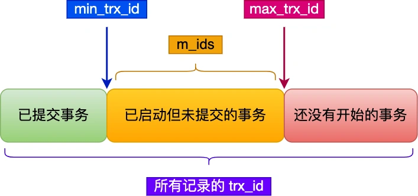

mysql-事务
事务是由 MySQL 的引擎来实现的，我们常见的 InnoDB 引擎它是支持事务的。
事务有哪些特性？ - acid
原子性（atomicity）
一个事务中的所有操作，要么全部完成，要么全部不完成。一致性（consistency）
事务操作前后，数据满足完整性约束，数据库保持一致性状态。隔离性（isolation）
数据库允许多个并发事务同时对其数据进行读写和修改的能力，隔离性可以防止多个事务并发执行时由于交叉执行而导致数据的不一致，因为多个事务同时使用相同的数据时，不会相互干扰，每个事务都有一个完整的数据空间，对其他并发事务是隔离的。持久性（durability）
事务处理结束后，对数据的修改是永久的，即便系统故障也不会丢失。
InnoDB 引擎通过什么技术来保证事务的这四个特性的呢？
- 原子性-通过 uodo log(回滚日志)来保证。
- 一致性-通过持久性+原子性+隔离性来保证。
- 隔离性-通过MVCC（多版本并发控制）或锁机制来保证。
- 持久性-通过 redo log（重放日志）来保证。
并行事务会引发什么问题？
MySQL 服务端是允许多个客户端连接的，这意味着 MySQL 会出现同时处理多个事务的情况。那么在同时处理多个事务的时候，可能出现如下问题
严重性排序如下：
脏读 - 读到其他事务未提交的数据
如果一个事务「读到」了另一个「未提交事务修改过的数据」，就意味着发生了「脏读」现象。不可重复读 - 前后读取的数据不一致
在一个事务内多次读取同一个数据，如果出现前后两次读到的数据不一样的情况，就意味着发生了「不可重复读」现象。幻读 - 前后读取的记录数量不一致
在一个事务内多次查询某个符合查询条件的「记录数量」，如果出现前后两次查询到的记录数量不一样的情况，就意味着发生了「幻读」现象。
事务的隔离级别有哪些
按隔离水平高低排序如下：
- 读未提交（read uncommitted）
指一个事务还没提交时，它做的变更就能被其他事务看到； - 读提交（read committed）
指一个事务提交之后，它做的变更才能被其他事务看到； - 可重复读（repeatable read）
指一个事务执行过程中看到的数据，一直跟这个事务启动时看到的数据是一致的，MySQL InnoDB 引擎的默认隔离级别； - 串行化（serializable ）
会对记录加上读写锁，在多个事务对这条记录进行读写操作时，如果发生了读写冲突的时候，后访问的事务必须等前一个事务执行完成，才能继续执行；
MySQL 在「可重复读」隔离级别下，可以很大程度上避免幻读现象的发生（注意是很大程度避免，并不是彻底避免），所以 MySQL 并不会使用「串行化」隔离级别来避免幻读现象的发生，因为使用「串行化」隔离级别会影响性能。
MySQL InnoDB 引擎的默认隔离级别虽然是「可重复读」，但是它很大程度上避免幻读现象（并不是完全解决了，详见这篇文章 (opens new window)），解决的方案有两种：
- 针对快照读（普通 select 语句），是通过 MVCC 方式解决了幻读。
- 针对当前读（select … for update 等语句），是通过 next-key lock（记录锁+间隙锁）方式解决了幻读，
事务的隔离级别实现
- 读未提交，因为可以读到未提交事务修改的数据，所以直接读取最新的数据就好了；
- 读提交，通过 Read View 来实现的，可以理解成一个数据快照。在「每个语句执行前」都会重新生成一个 Read View。
- 可重复读，通过 Read View 来实现的，可以理解成一个数据快照。在「启动事务时」生成一个 Read View。然后整个事务期间都在用这个 Read View。
- 串行化，通过加读写锁的方式来避免并行访问；
Read View 在 MVCC 里如何工作的？
Read View 结构

- creator_trx_id：创建该 Read View 的事务的事务 id。
- m_ids：创建 Read View 时，当前数据库中「活跃事务」的事务 id 列表，注意是一个列表，“活跃事务”指的就是，启动了但还没提交的事务。
- min_trx_id：在创建 Read View 时，当前数据库中「活跃事务」中事务 id 最小的事务，也就是 m_ids 的最小值。
- max_trx_id：这个并不是 m_ids 的最大值，而是创建 Read View 时当前数据库中应该给下一个事务的 id 值，也就是全局事务中最大的事务 id 值 + 1；
聚簇索引记录的两个隐藏列

- trx_id：当一个事务对某条聚簇索引记录进行改动时，就会把该事务的事务 id 记录在 trx_id 隐藏列里；
- roll_pointer（undo log）：每次对某条聚簇索引记录进行改动时，都会把旧版本的记录写入到 undo log日志中，然后这个隐藏列是个指针，指向每一个旧版本记录，于是就可以通过它找到修改前的记录。
记录里的事务id trx_id 的划分情况
一个事务去访问记录的时候，除了自己的更新记录总是可见之外，还有这几种情况：
1. 如果 trx_id < Read View 中的 min_trx_id，表示这个版本的记录是在创建 Read View 之前已经提交的事务生成的，是可见的。 2. 如果 trx_id >= Read View 中的 max_trx_id，表示这个版本的记录是在创建 Read View 后才启动的事务生成的，是不可见的。 3. 如果 min_trx_id <= trx_id < max_trx_id，需要判断 trx_id 是否在 m_ids 列表中： 1. 如果在列表中，表示生成该版本记录的活跃事务依然活跃（还没提交事务），不可见 2. 如果不在列表中，表示生成该版本记录的活跃事务已经被提交，可见。这种通过「版本链」来控制并发事务访问同一个记录时的行为就叫 MVCC（多版本并发控制）
可重复读是如何工作的？
可重复读隔离级别是启动事务时生成一个 Read View，然后整个事务期间都在用这个 Read View。
然后根据 Read View(读视图) 和 记录里两个隐藏列 trx_id(事务id) 和 undo log() 来实现。
读提交是如何工作的？
读提交隔离级别是在每次读取数据时，都会生成一个新的 Read View。
也意味着，事务期间的多次读取同一条数据，前后两次读的数据可能会出现不一致，因为可能这期间另外一个事务修改了该记录，并提交了事务。
MySQL 可重复读隔离级别，完全解决幻读了吗？
MySQL InnoDB 引擎的默认隔离级别虽然是「可重复读」，但是它很大程度上避免幻读现象（并不是完全解决了），解决的方案有两种：
1. 针对快照读（普通 select 语句），是通过 MVCC 方式解决了幻读，因为可重复读隔离级别下，事务执行过程中看到的数据，一直跟这个事务启动时看到的数据是一致的，即使中途有其他事务插入了一条数据，是查询不出来这条数据的，所以就很好了避免幻读问题。
2. 针对当前读（select ... for update 等语句），是通过 next-key lock（记录锁+间隙锁）方式解决了幻读，因为当执行 select ... for update 语句的时候，会加上 next-key lock，如果有其他事务在 next-key lock 锁范围内插入了一条记录，那么这个插入语句就会被阻塞，无法成功插入，所以就很好了避免幻读问题。
这两个解决方案是很大程度上解决了幻读现象，但是还是有个别的情况造成的幻读现象是无法解决的。
快照读是如何避免幻读的？
可重复读隔离级是由 MVCC（多版本并发控制）实现的，实现的方式是开始事务后（执行 begin 语句后），在执行第一个查询语句后，会创建一个 Read View，后续的查询语句利用这个 Read View，通过这个 Read View 就可以在 undo log 版本链找到事务开始时的数据，所以事务过程中每次查询的数据都是一样的，即使中途有其他事务插入了新纪录，是查询不出来这条数据的，所以就很好了避免幻读问题。当前读是如何避免幻读的？
MySQL 里除了普通查询是快照读，其他都是当前读，比如 update、insert、delete，这些语句执行前都会查询最新版本的数据，然后再做进一步的操作。这很好理解，假设你要 update 一个记录，另一个事务已经 delete 这条记录并且提交事务了，这样不是会产生冲突吗，所以 update 的时候肯定要知道最新的数据。
Innodb 引擎为了解决「可重复读」隔离级别使用「当前读」而造成的幻读问题，就引出了间隙锁。
事务 A 执行了这面这条锁定读语句后，就在对表中的记录加上 id 范围为 (2, +∞] 的 next-key lock（next-key lock 是间隙锁+记录锁的组合）。
然后，事务 B 在执行插入语句的时候，判断到插入的位置被事务 A 加了 next-key lock，于是事物 B 会生成一个插入意向锁，同时进入等待状态，直到事务 A 提交了事务。这就避免了由于事务 B 插入新记录而导致事务 A 发生幻读的现象。
幻读被完全解决了吗？
可重复读隔离级别下虽然很大程度上避免了幻读，但是还是没有能完全解决幻读。在可重复读隔离级别下
事务 A 第一次执行普通的 select 语句时生成了一个 ReadView。 之后事务 B 向表中新插入了一条 id = 5 的记录并提交。 接着，事务 A 对 id = 5 这条记录进行了更新操作，在这个时刻，这条新记录的 trx_id 隐藏列的值就变成了事务 A 的事务 id。 之后事务 A 再使用普通 select 语句去查询这条记录时就可以看到这条记录了，于是就发生了幻读。除了上面这一种场景会发生幻读现象之外，还有下面这个场景也会发生幻读现象。
T1 时刻：事务 A 先执行「快照读语句」：select * from t_test where id > 100 得到了 3 条记录。 T2 时刻：事务 B 往插入一个 id= 200 的记录并提交； T3 时刻：事务 A 再执行「当前读语句」 select * from t_test where id > 100 for update 就会得到 4 条记录，此时也发生了幻读现象。要避免这类特殊场景下发生幻读的现象的话，就是尽量在开启事务之后，马上执行 select … for update 这类当前读的语句，因为它会对记录加 next-key lock，从而避免其他事务插入一条新记录。